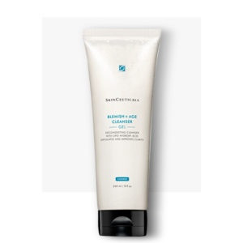
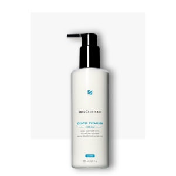
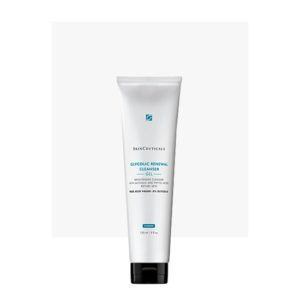
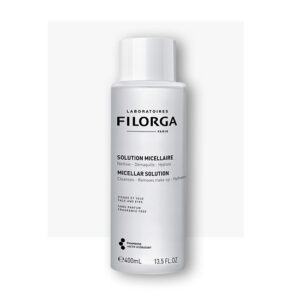
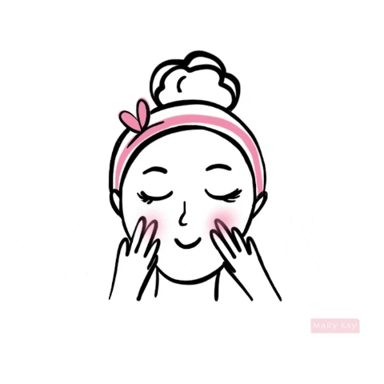

Es el cuidado que le damos a nuestra piel para mantenerla saludable. Se asocia con las rutinas que seguimos y los productos que usamos para que la piel de nuestro rostro luzca fresca y sana.
Alrededor del cuidado de la piel existe infinidad de información, mitos y realidades que pueden influir en tu decisión de compra de productos.
Una rutina de cuidado de piel mínima y completa es la que incluye tres pasos: desmaquillar y limpiar, hidratar o humectar y proteger.
Los pasos van aumentando en la medida en que identificas necesidades específicas de tu piel, tales como manchas o líneas de expresión. Sin embargo, tener una rutina que incluya muchos pasos no garantiza que sea la más efectiva. Al final, los resultados dependen del tipo de ingredientes que tenga cada producto y el conocimiento que existe detrás de la formulación.
Hoy en día existen cada vez más opciones que te ofrecen varias soluciones en un mismo producto, lo cual ayuda a tu piel y también al medio ambiente al producir y desechar menos frascos..
´
Algunos de nuestros productos




BLEMISH + AGE CLEANSER
GENTLE CLEANSER
GLYCOLIC RENEWAL CLEANSER
MICELLAR SOLUTION
$500.00
$699.00
$499.00
$599.00

Rutina básica
Una rutina de cuidado de piel mínima y completa es la que incluye tres pasos: desmaquillar y limpiar, hidratar o humectar y proteger.
Los pasos van aumentando en la medida en que identificas necesidades específicas de tu piel, tales como manchas o líneas de expresión. Sin embargo, tener una rutina que incluya muchos pasos no garantiza que sea la más efectiva. Al final, los resultados dependen del tipo de ingredientes que tenga cada producto y el conocimiento que existe detrás de la formulación.
Hoy en día existen cada vez más opciones que te ofrecen varias soluciones en un mismo producto, lo cual ayuda a tu piel y también al medio ambiente al producir y desechar menos frascos.
Hablemos de los 3 pasos básicos para cuidar tu piel: